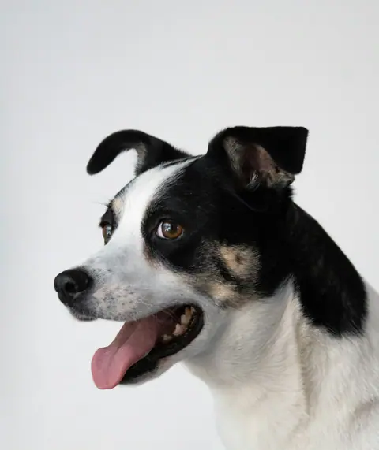
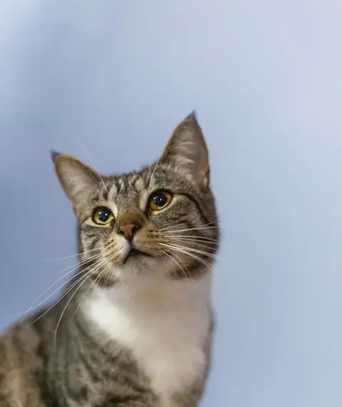
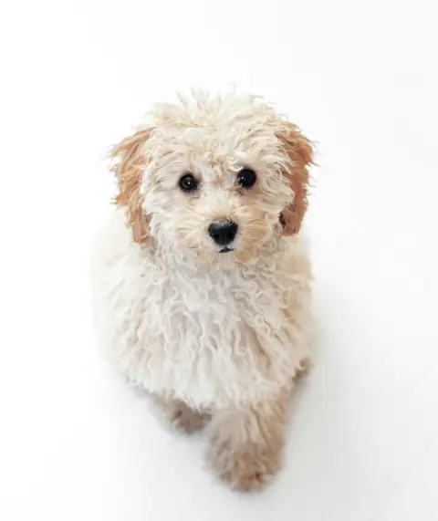
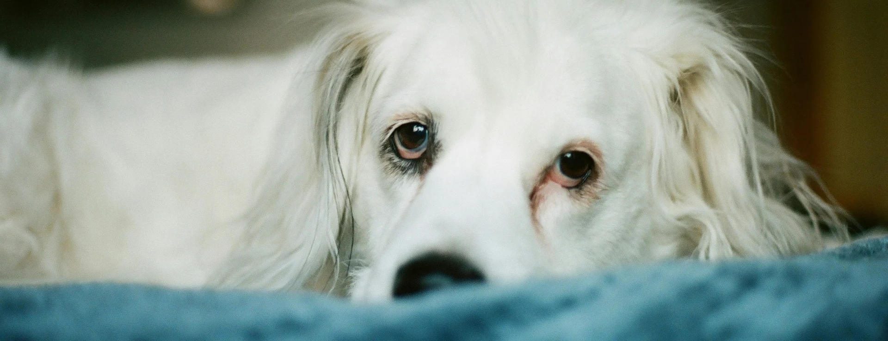

Atzapar · Albaitaritza klinika Tolosan
Atzapar albaitari klinika bat da Tolosan. Txakurrak, katuak eta etxeko beste animalia batzuk ikusten ditugu, eta hitzordua WhatsApp bidez eskatzen da, deitu gabe.
Kontsultan
Txertoak
Txertoak, txipa eta parasitoa kentzea.
Berrikuspenak
Urtean behin, edo arraro ikusten duzunean.
Kirurgia
Zikiratzeak eta eragiketak hitzorduarekin.
Ile-apainketa
Bainua, ebaketa eta azazkalak.
Aukeratu animalia, motiboa eta eguna minutu batean.
Hitzordua eskatuZure animaliari tokatzen al zaio txertoa?
Hurrengo txertoa—
Tokatzen zaio. Eskatu hitzordua nahi duzunean.
Hurrengoa azkenekoa baino urtebete geroago kalkulatzen da. Data zehatza kontsultan emango dizugu.
Abisatu WhatsApp bidez


Tolosako erdigunean
Helbidea
Kale Nagusia 0, 20400 Tolosa
Telefonoa eta WhatsAppa
